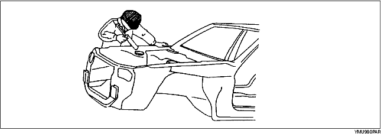
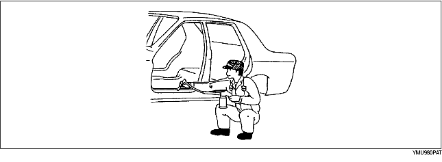

• Apply body sealer where necessary.
• For locations where application of body sealer is difficult after installation, apply it before installation.

• Apply an undercoat to the required location of the body.
• Apply rust inhibitor (wax, oil, etc.) to the back of the welded areas.

• Apply floor silencer by heating with an infrared ray lamp.